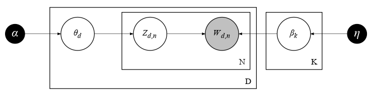
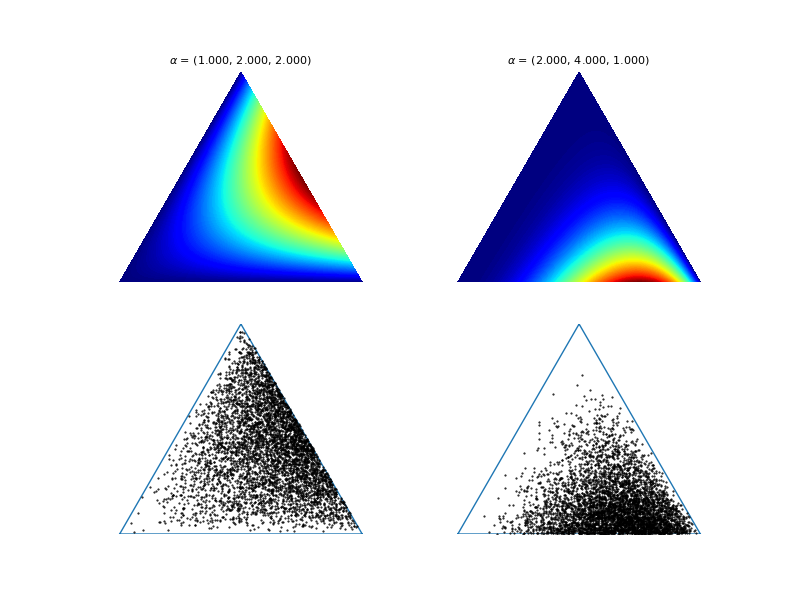
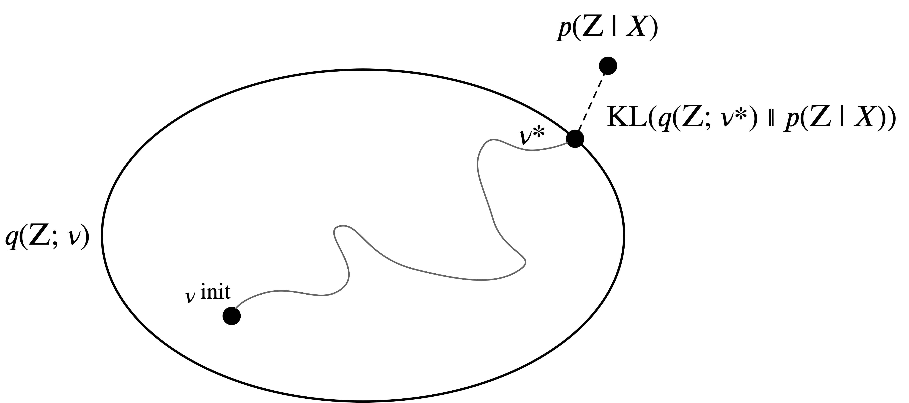
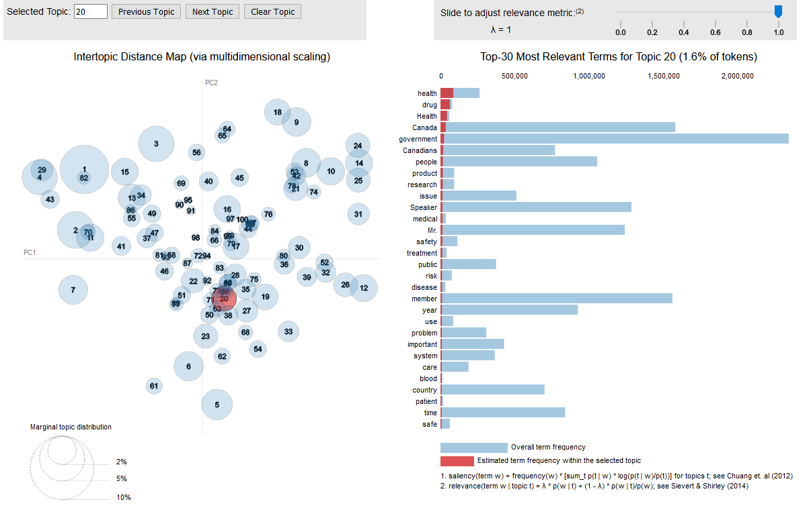

25 Latent topics in text (LDA)
25.1 LEARNING OBJECTIVES
- Explain how variational inference differs from Hamiltonian Monte Carlo sampling, conceptually
- Describe the distinction between deterministic and stochastic/generative topic models
- Explain what Latent Dirichlet Allocation is and how it works
- Explore the use of Semantic Coherence as an evaluation metric
25.2 LEARNING MATERIALS
You can find the online learning materials for this chapter in doing_computational_social_science/Chapter_30. cd into the directory and launch your Jupyter Server.
25.3 INTRODUCTION
This chapter serves three purposes: (1) introduce you to generative topic modelling and Bayesian latent variable modelling more generally, (2) explain the role that graphical models can play in developing purpose-made generative models, and (3) introduce you to another computational approach for approximating the posterior called “variational inference.”
We’ll start by introducing the logic behind generative topic modelling. Then, we will discuss the technical details of one of the most widely-used topic models: latent Dirichlet allocation (LDA). Then, we’ll cover the basics of approximating the posterior using an alternative to HMC called variational inference. In the second section, we’ll start developing LDA topic models with Gensim, discuss quantitative measures of coherence, and show how to visualize topic models.
25.4 GENERATIVE TOPIC MODELS
You’ve likely noticed that “latent” is a not-so-latent theme in this book. Recall Chapter 9. Sometimes our data has highly correlated variables because they arise from a shared latent factor or process. That may even be by design, like when we collect data on low-level indicators of an abstract and unobservable concept that we want to measure. We later extended that idea to text analysis by discussing latent semantic analysis, which used deterministic matrix factorization methods (truncated SVD) to construct a set of latent thematic dimensions in text data. In other chapters, we’ve touched on “latent” variables in a variety of different ways, including regression models and latent network structure.
Latent variables are central to Bayesian thinking. When we develop models in the Bayesian framework, we define joint probability distributions with both latent and observed variables, and then use an inference algorithm such as HMC or variational inference (introduced below) to approximate the posterior distribution of each latent variable conditional on the evidence provided by the observed variables. This is an extremely flexible and mathematically-principled way of working with latent variables that you can use to develop probabilistic models for just about any research. So, what exactly would a Bayesian approach to modelling latent thematic structure – topics – in text data look like?
Generative topic models got their start when the computer scientists David Blei, Andrew Ng, and Michael Jordan (2003) published a classic paper proposing the model we will focus on in this chapter. This model and many variants of it are widely used in the social sciences and digital humanities, some of them developed by social scientists (e.g., M. Roberts et al. 2013; M. E. Roberts et al. 2014). Broadly speaking, generative topic models are a family of Bayesian models that assume, like Latent Semantic Analysis, that documents are collections of thematically linked words. Rather than using matrix factorization methods to understand latent themes, most generative topic models approach this as just another latent variable problem.
Although applicable in many contexts, we should be especially open to using generative topics models if:
- We have data in the form of many text documents.
- We know that each document contains words that represent different themes, or topics, in various proportions.
- We want to infer the distribution of latent topics across documents given the words we observe in them.
- We have a plausible mechanism, or a “simple generative story,” of the relationship between our latent and observed variables that will help us accomplish (3): documents and their specific combinations of words are “generated from” a mixtures of latent themes, which are themselves mixtures of words.
In the case of text data, posing a generative mechanism means thinking through the reasons why some words co-occur in documents while others tend not to. Something influences those relationships; our word choices are not random. What might lead a politician making a speech, or a scientist writing journal articles, to select some combination of words but not others? Why does elephant floral own snowstorm aghast the rock cat? (see what I did there?)
Many generative mechanisms have been posited and tested by different types of topic models, including some that are designed to take information about speakers / authors into account in a regression model-like framework (e.g., M. Roberts et al. 2013; M. E. Roberts et al. 2014; Rosen-Zvi et al. 2012) or to account for the ordering / sequence of words (e.g., D. M. Blei and Lafferty 2006; Wang, Blei, and Heckerman 2012), but the foundational generative mechanism that unites all topic models is that the particular mixture of words that show up in documents are related to a latent set of underlying themes, latent topics. The topics we discuss are one of the key factors that determine the probability of selecting one word over another.
We learn about the underlying latent topics by constructing a probabilistic model and then using an inference algorithm to approximate the posterior. We will construct a latent Dirichlet allocation topic model (a subtype within the more general class of mixed membership models), which revolutionized natural language processing and probabilistic machine learning in the early 2000s. It remains a widely used model, alongside many variations.
The goal of approximating the posterior with an LDA topic model is learning about the distribution of latent topics over: (i) documents and (ii) words. Say we have a journal article about social movements focused on energy transitions. There are likely quite a few latent topics in this article but it’s safe to say that the dominant ones are probably “social movements” and “energy transitions.” Of course, the model doesn’t actually know what “social movements” and “energy transitions” are, so it might tell us that the article in question is 17% “topic 11,” 12% “topic 2,” and then many other topics in much smaller proportions. Note that these are mixtures; documents always consist of multiple topics, though one may be dominant.
Every word in our document has a different probability of appearing in each of the topics we find. The words “movement,” “mobilization,” “collective,” and “protest” may have a high probability of appearing in topic 11 (which we interpret as “social movements”). The words “environmental,” “transition,” “energy,” “oil,” “renewable,” and “pipeline” may have a high probability of appearing in “energy transitions and politics,” “topic 2,” but a relatively low probability of appearing in social movements topics. Other words, such as “medical,” and “healthcare” will have a low probability of appearing in either topic (assuming they appear at all), but they might have a high probability of appearing in a topic about “health” (which itself has a low probability of appearing in the article.
This notion that words have different probabilities of appearing in each topic makes it possible for the same word to have a high probability of appearing in more than one topic depending on its use (we discuss this more in the next chapter). For example, the word “policy” might have a high probability of appearing in both topics. This turns out to be a major benefit of generative topic models. As prominent sociologists of culture have pointed out, this brings the topic modelling framework close to relational theories of language and meaning that have been influential in the social sciences for quite some time (e.g. DiMaggio, Nag, and Blei 2013; Mohr and Bogdanov 2013).
Now that we’ve built a bit of intuition about what a generative topic model might look like, let’s get into some of the technical modelling details. Then we’ll use these models to analyze latent topics in 1,893,372 speeches made in Parliament by Canadian politicians over a thirty-year period (1990 - 2020).
25.4.1 Latent Dirichlet Allocation (LDA)
25.4.2 LDA as a Graphical Model
In previous chapters, we developed and described our Bayesian models using statistical model notation, and we briefly saw graphical models as an alternative in the context of regression modelling. Graphical models are a powerful tool for developing, critiquing, and communicating our probabilistic models in part because they make three key things explicit:
- the origin of every variable in our model as either observed or latent (we’re always playing the “what’s that?” game introduced in Chapter 27), and
- our assumptions about the structure of statistical dependencies between all the variables in our model, and relatedly
- our assumptions about the generative processes that give rise to the data we observe.
Graphical models are a favoured tool in probabilistic machine learning in particular (Koller and Friedman 2009; McElreath 2020; Pearl and Mackenzie 2018; Jordan 2004, 2003), and you’ll see them everywhere in the generative topic modelling literature. Though they can be a little confusing at first, they are transparent once you know how to read them. Let’s break down the graphical representation of a vanilla LDA topic model, shown in Figure ?fig-30_01.

It is possible to produce graphical models like this automatically using pymc. Doing so can be very useful if you want to examine how your Bayesian models are structured. Consult the pymc documentation if you want to learn more!
Now, what does it mean?
First, each node in the graph represents a random variable, with observed variables shaded and latent variables unshaded. The black nodes are model hyperparameters. Each arrow in the graph represents a statistical dependency, or to be precise, conditional independence. The boxes (called plates) represent repetition over some set of items (replicates), like words or documents. Plates notation is very useful for condensing your graphical models. For example, without it, you would need a node for each document in a text analysis. We will soon analyze 1,893,372 political speeches. Now, imagine how many nodes we would need for the \(\text{W}_{d,n}\) node.
Let’s break down this specific graphical model starting with the plates. The large outer plate with the \(D\) in the bottom right corner represents all of the documents in our document collection. When we get to our model for political speeches, \(D\) will equal 1,893,372. Everything inside the document plate is repeated for each individual document in the document collection. In other words, it pertains to \(D_i\), where the index \(_i\) represents any given document in the dataset. The small inner plate with \(N\) in the bottom right represents the specific words and their position in the probability distribution for each topic. We’ll come back to this momentarily. The third plate, with \(K\) in the bottom right, represents the latent topics whose distributions we are computing. If we model 100 topics, then \(\beta_{k}\) would be 100 probability distributions over terms.
Every document in our dataset is composed of a mixture of topics, with each topic being a probability distribution over words. Inside the document plate, then, \(\theta_{d}\) represents the topic proportions for each document. Picture a matrix with documents in the rows and latent topics (represented by arbitrary numerical IDs) in the columns. Each document in our collection is made up of words. The gray node \(W_{d,n}\) represents each observed word \(_n\) for each document \(_k\), while \(\text{Z}_{d,n}\) represents the topic assignments for each word in each document for each topic. In other words, each word in each document has a probability associating it with each topic. Imagine a matrix of probabilities with words in the rows and latent topics in the columns. \(\beta_{k}\) represents the topics themselves, with \(k\) being the number of latent topics to model. The value of \(k\) is selected by the researcher; we’ll discuss that process shortly.
That leaves the black nodes \(\alpha\) and \(\eta\). These are priors for the parameters of the Dirichlet distribution, and we’ll discuss the options for these below. \(\alpha\) is the “proportions parameter” and represents text-topic density. Think of this as the prior probability that a document will be associated with a topic. If we set \(\alpha\) to a high value – say close to 1 – the probability of texts being associated with topics increases, and when \(\alpha\) is set to a low value – say 0.1 – the probability decreases. \(\eta\), on the other hand, represents topic-word densities. It’s known as the “topic parameter. When \(\eta\) is set to a high value, the probability of a word being associated with a topic increases. When it is set low, the probability decreases.
Putting this all in one convenient place, then,
- \(\beta_{k}\) represents the latent topics themselves;
- \(\theta_{d}\), inside the document plate, represents the latent topic proportions for each document;
- \(\text{Z}_{d,n}\) represents the latent topic assignments for each word \(_n\) in each document \(_d\);
- \(\text{W}_{d,n}\) represents each observed word \(_n\) in each document \(_d\)
- \(\alpha\) represents the portions hyperparameter (the prior probability that a document is associated with a topic), and
- \(\eta\) represents the topic hyperparameter (the prior probability that a word is associated with a topic).
We are representing a three-level Hierarchical Bayesian latent variable model with each document in a document collection modelled as a finite mixture of hidden topics in varying proportions, and with each topic modelled as an infinite mixture of words in varying proportions. It posits a generative relationship between these variables in which meaningful patterns of co-occurring words arise from the specific mixtures of latent themes. Altogether, it descibes the joint probability distribution for (a) the latent topics, (2) their distribution over documents, and (3) their distribution of words, or
\[\begin{align} P(\beta, \theta, Z, W). \end{align}\]
But, we want to know the posterior, which is the probability of the topics, their distribution over documents, their distribution of words conditional on the observed words, or
\[\begin{align} P(\beta, \theta, Z | W). \end{align}\]
As with other Bayesian models, we can’t derive the posterior from the joint distribution analytically because of the intractable denominator in Bayes theorem, and because the number of potential latent topical structures is exponentially large, so we turn to approximate posterior inference. That’s where variational inference comes in.
25.4.3 The Dirichlet in Latent Dirichlet Allocation
Like the probabilistic models we’ve developed, probabilistic topic models are built out of probability distributions! The ‘Dirichlet’ portion in Latent Dirichlet Allocation (often written as Dir(\(\alpha\)) is just another probability distribution of the kind discussed in Chapter 26. It’s a generalization of the idea of a triangle (called the simplex), only it can have an arbitrary number of sides… What?
These kinds of descriptions (generalization of a triangle) are useful for those already deeply familiar with mathematical geometry or multidimensional probability distributions, but they’re unlikely to get the rest of us very far. That said, with a little scaffolding, this will quickly make sense. In the probability primer chapter, we established that some probability distributions only cover some parts of the real number line; the exponential distribution, for instance, only supports positive values. The ‘beta distribution’ takes this idea a bit further: it only supports values from 0 to 1, inclusive. It takes two parameters, \(\alpha\) and \(\beta\), which jointly control the shape of the curve. You can think of the two as representing inversely correlated axes, both trying to pull more of the probability density towards the side of the distribution that they’re more positive in (so \(\alpha\) pulls to the right, towards 1, \(\beta\) pulls to the left, towards 0). Here’s an example of one where \(\beta\) is doing more of the pushing (Figure ?fig-30_02):

The beta distribution is remarkably flexible: you should look up some examples of the shapes it can take!
Since the beta distribution only supports values from 0 to 1, what would it look like if we tacked on a second dimension to this distribution? See for yourself, in Figure ?fig-30_03.

Behold the Dirichlet distribution! The Dirichlet is a multi-dimensional generalization of the Beta distribution. In the diagram above, instead of 2 parameters (\(\alpha\) and \(\beta\)) having a tug-of-war along a real number line, we have 3 parameters having a 3-way tug-of-war (the probability is concentrated in areas closer to the red end of the colour spectrum). The shape they’re battling over is a simplex in 2 dimensions (which is just a triangle). If we add a third dimension, then our triangle becomes a pyramid (a 3-dimensional simplex), and we’ll have 4 parameters duking it out in a 4-way tug-of-war. Remember that because the Dirichlet distribution is a probability distribution, its density must integrate to 1; this makes the Dirichlet very useful for describing probability across a large number of mutually-exclusive categorical events.
Like the other Bayesian models we’ve seen, LDA topic models require priors. The \(\alpha\) and \(\eta\) hyperparameters inform the generation of the Dirichlet distribution, and understanding them gives you much greater control over your model. If this discussion of priors reminds you of the chapters on Bayesian Regression, good! LDA models function in a very similar framework. In fact, we can present LDA in a similar format to those chapters!
A few notes first. We’re going to include a long list of variables, including what each of them mean. Normally, we don’t do this kind of thing, because the variables in Linear Regression models are usually self-evident. In the case of LDA, most of the ‘data’ variables we’re using are calculated using some aspect of the corpus and beg explanation. The first three sections that follow (Data, Hyperparameters, and Latent Variables) are all simple descriptions. They all come together in the 4-line Model section at the end.
Data
\[\begin{align} V &: ~~~\text{integer} & \text{ [Number of Unique Terms in Vocabulary]}\\ D &: ~~~\text{integer} & \text{ [Number of Documents]}\\ d &: ~~~\text{integer, values [min:1, max:} D] & \text{ [Document ID]}\\ N &: ~~~\text{integer} & \text{ [Total Word Instances]}\\ n &: ~~~\text{integer, values [min:1, max:} N] & \text{ [Word Instance]}\\ K &: ~~~\text{integer} & \text{ [Number of Topics]} \\ k &: ~~~\text{integer, values [min:1, max:}K] & \text{ [Topic]}\\ \end{align}\]
Hyperparameters
\[\begin{align} \alpha &: ~~~\text{vector of real numbers, length } K & \text{[Topic-in-Document Prior Hyperparameter]} \\ \eta &: ~~~\text{vector of real numbers, length } V & \text{[Term-in-Topic Prior Hyperparameter]} \\ \end{align}\]
Latent Variables
\[\begin{align} \theta_d &: ~~~K\text{-simplex, Dirichlet-distributed} & \text{ [Topic Distribution for Document } d] \\ \beta_k &: ~~~V\text{-simplex, Dirichlet-distributed} & \text{[Word Distribution for Topic } k] \\ \end{align}\]
Model
\[\begin{align} \theta_d &\sim \text{Dirichlet}(\alpha) && \text{ for } d \text{ in } 1 ... D & \text{ [Topic-in-Document Prior]} \\ \beta_k &\sim \text{Dirichlet}(\eta) && \text{ for } k \text{ in } 1 ... K & \text{ [Term-in-Topic Prior]} \\ z_{d,n} &\sim \text{Categorical}(\theta_d) && \text{ for } d \text{ in } 1 ... D, n \text{ in } 1 ... N &\text{[Document-Topic Probability]} \\ w_{d,n} &\sim \text{Categorical}(\beta_{z[d,n]}) && \text{ for } d \text{ in } 1 ... D, n \text{ in } 1 ... N &\text{[Likelihood]} \end{align}\]
Whew, that’s a lot of variables! We’ve already discussed what some of them are (and how they function), but some remain enigmatic. Let’s discuss them in the abstract here.
25.4.3.1 Understanding the \(\alpha\) hyperparameter
The \(\alpha\) parameter can be a relatively naive setting, or more informed. If it’s a simple scalar (ie. single value) it will be propagated into a matrix of expected topic probabilities for each document. In all cases, this matrix has a shape of n_topics x n_documents. When a single value is used for all of the topic, this is a symmetric prior. As you will soon see, this “a-priori” assumption actually matters, even though the LDA model will modify these values a lot. A symmetric prior essentially tells the model “I expect the probability of each topic being a topic in each document to be the same, and you will have to work very hard to tell me otherwise.” There are times where this assumption might actually be helpful for the model. In most cases, though, we want to use LDA to tell us something we don’t know about a corpus, with an unknown distribution of topics. In this case, an asymmetric prior is essential(H. M. Wallach, Mimno, and McCallum 2009; Syed and Spruit 2018). In the example from (Hoffman, Bach, and Blei 2010) this value is set at 1/num_topics, but they mention that this is for simplicity, and reference (H. M. Wallach, Mimno, and McCallum 2009) that asymmetric priors can also be used.
An asymmetric prior tells the LDA model that the probability of each topic in a given document is expected to be different, and that it should work on determining what those differences are. Unlike the symmetric prior, there is a lot of flexibility in the \(\alpha\) hyperparameter for an asymmetric prior in Gensim. If a scalar is given, the model will incorporate the values from 1 to num_topics when it generates the prior. This means that each document has an array of topic probabilities that are all different, although each document will have the same array. Rather than a single scalar value, it’s also possible to pass an \(\alpha\) array of expected probabilities that is informed by prior knowledge. This could be domain knowledge, but then we would again be left wondering whether we want to learn something or just confirm what we already know. Perhaps the most exciting option here, then, is to use Bayes to inform Bayes. A crucial part about the use of asymmetric priors for the \(\alpha\) hyperparameter is that the LDA model becomes a lot less sensitive to the number of topics specified. This decreased sensitivity means we should be able to trust the assignment of topics by the model regardless of how much choice we give it.
Of course, there’s more than one way to do this. Gensim implements an automatic hyperparameter tuning method, based on work by (Ypma 1995), where the model priors are updated at regular intervals during iterations of model training. This is convenient for a number of reasons, but in particular: we can train an LDA model on a random sample of the data, setting the model to update the priors as frequently and for as many iterations as we have time for. Then, the updated \(\alpha\) prior can be used to model the entire corpus. As you will read about in the next chapter, this is a form of transfer learning, and it comes with many advantages.
The posterior results, theta, will be these priors fitted to the corpus, with which we can estimate unique topic probabilities for each document.
25.4.3.2 Understanding the \(\eta\) hyperparameter
The \(\eta\) hyperparameter functions quite similarly to \(\alpha\) in terms of technical implementation, but has very different assumptions and conceptual implications. The prior constructed from \(\eta\) is the expected probability for each word being a part of each topic. This can, again, be initialized in a relatively simple way by providing a single value - Hoffman and Blei again use 1/num_topics. This time, the single value is used to populate an array of shape n_topics x n_words. This again results in a symmetric prior, but the conceptual implication is actually what we want - if we told the model that the probability of each word’s topic contribution should be different from the beginning, we would be directing the model to prefer some words to others. This could bias words away from contributing to topics that they should, or towards topics that they shouldn’t. This issue would tend to smooth out with a large amount of training data, but it’s safer to just start this parameter with uniform word probabilities. In reality, the words we use are versatile and many of them are very likely to be used in all topics. So conceptually, this prior should actually be a symmetric one, and we’ll look at some evidence for this shortly (H. M. Wallach, Mimno, and McCallum 2009).
Nonetheless, there are also asymmetric options for eta, although they’re very similar to alpha, so we won’t spend too much time rehashing the technical details. We can provide an array of probabilities for each word that will be their prior expected probabilities for each topic, or a matrix of shape num_topics x n_words to make the expected word probabilities specific to each word. The last option is to use the same prior update method introduced above for the \(\alpha\) prior. We will demonstrate below that the latter method indicates that \(\eta\) becomes fairly symmetrical after model training, suggesting that a simple symmetrical prior is the most efficient choice and will not result in a loss of accuracy.
The posterior results, beta, will be these \(\eta\) priors fitted to the corpus, which can be used to calculate unique topic probabilities for each word, as well as the top probabilities of words forming each topic.
25.4.4 Variational Inference
We have just described the structure of our generative model. The structure is independent of the inference algorithm that we use to approximate the posterior probabilities for \(\beta\), \(\theta\), and \(Z\). We’ve seen this kind of thing before; in the chapters on Bayesian Linear Regression, we defined our models using priors, likelihood, and a linear model, and then sampled from those models’ posteriors to produce final posterior distributions. We used pymc’s Hamiltonian Monte Carlo-like (HMC) sampler to accomplish this (it’s an easy, efficient, general-purpose approach), but we could have used any number of other techniques, such as a Gibbs Sampler, grid approximation, quadratic approximation, and so on. Our models would have remained the same regardless of approximation techniques.
In this section, we’re going to introduce Variational Inference (VI), which is another approach to approximating the posterior of a Bayesian model (D. Blei, Ng, and Jordan 2003). The goal of VI is identical to that of HMC; both seek to efficiently approximate an entire posterior distribution for some set of latent variables. However, whereas HMC is based on the idea that we can learn about posterior distributions by sampling from them, variational inference attempts to approximate posteriors by using a parametric distribution (or some combination thereof) that gets as close as possible. For this brief introduction, the point is that we will still be approximating the posterior, but without imaginary robots hurling imaginary marbles around an unfathomably large sample space. Sampling methods like HMC construct an approximation of the posterior by keeping a ‘tally’ of where the marble ends up in space, building a jagged pyramid of sorts, and then sanding down the edges and filling in the gaps to produce the smooth posterior curves you saw in the model outputs of chapters 28 and 29. It’s worth knowing that VI, by contrast, approaches the problem by doing the rough equivalent of taking a bendy piece of wire and trying to warp it so that it closely matches the posterior. The key here is that VI provides us with a close-as-possible approximation of posterior distributions using a distribution that we can describe mathematically. Remember, at the beginning of Chapter 27, I recounted a parable about there being “more functions than formulae”? The results that we get from a sampling-based approach to approximating the posterior (HMC, MCMC, Gibbs), gives us the equivalent of a function without a formula. We know what those posteriors look like and the values they take on, but we can’t use a mathematical formula to describe them. Variational inference, on the other hand gives us a function with a formula. It’s not a perfect analogy, but it should help you grasp the difference between the two.
The major breakthroughs in generative topic modelling are due, in part, to variational inference. It provides a proxy which we can use to calculate an exact analytical solution for the (still approximate) posterior distribution of the latent variables \(p(Z | X)\). To do that, we posit a family of distributions with variational parameters over the latent variables in our model, each of which is indexed by the parameter \(\nu\). It’s written like this:
\[\begin{align} q(Z; \nu) \end{align}\]
We pick some initial value for \(\nu\) and then gradually modify it until we find parameter settings that make the distribution as close to the posterior \(p(Z | X)\) as possible. We assess closeness by measuring the distance between the two distrubutions using a measure from information theory called KL Divergence. Once we know those parameter settings, we can use \(q(Z; \nu)\) as a proxy for the posterior.
This is represented in Figure ?fig-30_04, which is adapted from D. Blei (2017). We represent the family of distributions \(q(Z ; \nu)\) as an ellipse, and every position within that ellipse represents a specific instantiation of the variational family, indexed by \(\nu\). The squiggly gray line represents different realizations along the way to finding the parameterized distribution that is closest to the posterior, measured with KL divergence.

Remember that, as with HMC, we are approximating the posterior. Only instead of approximating it by drawing samples, we approximate it by finding another very similar but not identical distributions that can serve as exact analytical proxies for the posterior. The general process works as I’ve decscribed above, but the specifics are a thriving area of research in machine learning. Discussions of variational inference in the technical literature involve a healthy dose of dense mathematics, but most of the technical specifics are not really necessary to understand as an applied researcher. It “Just Works\(^{(TM)}\).” It is especially useful when working with very large datasets, as we do in text analysis, and it’s a good bit faster than HMC in cases like these, but is just as accurate.
I have just covered the basic goals and ideas behind LDA topic models and the importance of thinking through the generative mechanisms. You should also understand generative topics models using graphical models with plate notation, and the basics of how variational inference works. There’s one final issues left to address: selecting the number of topics. Here, once again, the emphasis is on iterative multi-method workflows that leverage as much information and careful interpretive and critical work as possible.
Further Reading
If you want another friendly introduction to LDA topic models, I recommend D. Blei (2012). If you are looking to develop a deeper understanding of variational inference aside from its specific application in LDA topic models, I would recommend Chapters 21 and 22 of Murphy’s (2012) comprehensive Machine Learning: A Probabilistic Perspective.
25.4.5 Selecting the Number of Topics
With LDA topic models, we need to specify the number of topics, \(K\), in advance. We are defining a random variable whose values we will infer from the posterior. Selecting the number of topics in a generative topic model is a bit of a dark art; due to the nature of the problem, there is no “correct” number of topics, although some solutions are certainly better than others. If we tell our topic model to identify 12 topics, it will. It will model the probability distribution of those topics over a set of documents and a probability distribution of words for each of the 12 topics. So how do we know how many topics to look for, and what are the consequences of selecting a number that is too large or too small?
Let’s explore a comparison. Imagine using a simple clustering method like \(k\)-means as a rudimentary topic model: you want to identify groups of documents that are thematically similar, so you create a bag-of-words representation of the documents, perform some dimensionality reduction with PCA, and then pass some number of principal components into the \(k\)-means algorithm along with the number of clusters to look for. With \(k\)-means, each observation (i.e., document) can only be assigned to a single cluster, and if clusters are thematically distinct, then they can only be assigned to a single theme. Continuing with our previous example, a hypothetical article about social movements focused on energy transitions would have to be assigned a single topic (either social movements, energy transitions, or a single topic capturing both of these things), which makes it very likely that documents will be assigned to clusters that don’t fit them very well. There is no “correct” value for \(k\), but solutions that set the value of \(k\) too high or too low will result in clusters containing many documents that have no business being there.
Though topic models also require the researcher to choose the number of topics, the consequences of using a sub-optimally calibrated topic model are different from clustering methods like \(k\)-means. To reiterate: in topic modelling, documents are always conceptualized as a mixture of topics. If the number of topics that we specify is too small, our model will return extremely general and heterogeneous topics. To a human reader, these topics often appear incoherent. On the other hand, if we set the number of topics too high, then the model will return extremely specific topics. This can seem like taking one topic and splitting it into two topics that are differentiated by things that don’t really matter. It’s the topic modelling version of the narcissism of minor differences. We don’t want that either.
Let’s continue with our hypothetical example for a bit longer. Say we pick a large number of topics and the result is that we split our social movement topic into multiple social movement topics. Is this a good thing or a bad thing? The short answer is “it depends.” If we are lucky, that split may make some sense, such as separating content on resource mobilization theory (McCarthy and Zald 1977) from other theoretical perspectives in social movement research, such as frame analysis (Benford and Snow 2000; Snow et al. 2014; Benford 1993), political process theory (McAdam 2010; Caren 2007), multi-institutionalism (Armstrong and Bernstein 2008), or strategic adaptation (H. McCammon 2012, 2009; H. J. McCammon et al. 2007). Or perhaps it would differentiate between cultural approaches and structural approaches (Smith and Fetner 2009). In reality, we may not find topics that align so neatly with our own mental models but the take home message here is that general (fewer topics) and specific (more topics) solutions can both be good or bad; the “best” solution depends on what we are trying to learn.
Looking for fine distinctions with a small number of topics is like trying to compare pedestrians’ gaits while standing on the rooftop patio of an extremely tall building. It’s not “wrong” but if you really want to analyze gait, you would be better off getting a little closer to the action. On the other hand, if you were looking for a more general perspective on the flow of foot traffic in the neighbourhood, the top of a tall building is a perfectly fine place to be. The key thing to realize here is that your goal makes one vantage point better or worse than the other. Luckily, the same research that found LDA results to be greatly improved by an asymmetric prior also found that the artificial splitting of topics was greatly diminished. This means that, in general, we’re better off choosing too many topics than choosing too few, so long as we’re using an asymmetrical prior. On the other hand, if you’re using LDA on a corpus where you actually do expect a homogenous set of topics to be equally likely in the documents, you might want to use a symmetric prior, in which case you will also want to experiment more with the number of topics. However, if you know enough about the data to determine this is the prior you need, then you probably also have a ballpark idea about how many topics to expect! The two a-priori assumptions go hand-in-hand.
In short, we can make bad decisions when topic modelling, and these bad decisions can have major implications for what we find. But the risks are different than they are for methods like \(k\)-means clustering because documents are always a mix of topics. Most of the time, the risk of a bad topic solution is that we will be either too zoomed in or zoomed out to learn what we want to learn. The best course of action here is to develop many different models with different numbers of topics. And the best way to do this is in an iterative framework like Box’s loops, or better yet a framework like computational grounded theory (discussed in Chapter 11) that is designed specifically for multi-method text analysis.
25.5 TOPIC MODELLING WITH GENSIM
There are a number of options for developing topic models with Python. In this chapter we’ll use Gensim because it’s mature, well-maintained, and has good documentation. It offers some really nice implementations of widely-used models, is computationally efficient, and scales well to large datasets.
import pandas as pd
import numpy as np
import seaborn as sns
import matplotlib as mpl
import matplotlib.pyplot as plt
from dcss import set_style, download_dataset
set_style()
from dcss.text import preprocess, bow_to_df
from gensim import corpora
from pprint import pprint
from gensim.models import LdaModel
from gensim.models.ldamulticore import LdaMulticore
from gensim.models.coherencemodel import CoherenceModel
import pickleca_hansard_data_url = "https://www.dropbox.com/scl/fo/5voxfrx6qeqgdrjuc979k/AD63UZhKpxF64b58Jp65w18?rlkey=2bbaqw1bwjgvodbwqhox494e2&st=99fldjgr&dl=0"
download_dataset(ca_hansard_data_url, 'data/canadian_hansard/')df = pd.read_csv('data/canadian_hansard/lipad/canadian_hansards.csv', low_memory=False)df.info()<class 'pandas.core.frame.DataFrame'>
RangeIndex: 946686 entries, 0 to 946685
Data columns (total 16 columns):
# Column Non-Null Count Dtype
--- ------ -------------- -----
0 index 946686 non-null int64
1 basepk 946686 non-null int64
2 hid 946686 non-null object
3 speechdate 946686 non-null object
4 pid 824111 non-null object
5 opid 787761 non-null object
6 speakeroldname 787032 non-null object
7 speakerposition 202294 non-null object
8 maintopic 932207 non-null object
9 subtopic 926996 non-null object
10 subsubtopic 163963 non-null object
11 speechtext 946686 non-null object
12 speakerparty 787692 non-null object
13 speakerriding 686495 non-null object
14 speakername 923416 non-null object
15 speakerurl 763264 non-null object
dtypes: int64(2), object(14)
memory usage: 115.6+ MBThe text data is stored in the speechtext Series. We’ll use the dcss preprocess() function to perform the same pre-processing steps that we’ve used a few times since. As a reminder, this function passes each document through SpaCy’s nlp pipeline and returns a list of tokens for each document, each token being a lemmatized noun, proper noun, or adjective that is longer than a single character. The function also strips out English language stopwords.
texts = df['speechtext'].tolist()
processed_text = preprocess(texts, bigrams=False, detokenize=False, n_process = 32)len(processed_text)1893372Since pre-processing 1.8 million speeches takes a good amount of time, we’ll pickle the results. Then we can easily re-load then again later rather than needlessly waiting around.
with open('data/preprocessed_speeches_canadian_hansards_no_bigrams.pkl', 'wb') as handle:
pickle.dump(processed_text, handle, protocol=pickle.HIGHEST_PROTOCOL)processed_text = pickle.load( open( 'data/preprocessed_speeches_canadian_hansards_no_bigrams.pkl', 'rb'))25.5.0.0.1 Creating a Bag-of-Words with Gensim
To topic model our data with Gensim, we need to provide our list of tokenized texts to the Dictionary() class. Gensim uses this to contruct a corpus vocabulary that assigns each unique token in the dataset to an integer. If you run dict(vocab) after creating the vocab object, you’ll see this this is just a Python dictionary that stores a key:value pairing of the integer representation (the key) of each token (the value).
We’ll also create a corpus object using the doc2bow method of the Dictionary class. The resulting object stores information about the specific tokens and token frequencies in each document. If you print the corpus object, you will see a lot of numbers. The corpus object itself is just a list, and each element of the list represents an individual document. Nested inside each document are tuples (e.g. (147, 3)) that represent (a) the unique integer ID for the token (stored in our vocab object) and (b) the number of times the token appears in the document.
We’re going to filter the vocabulary to keep tokens that only appear in 20 or more speeches, as well as tokens that don’t appear in more than 95% of speeches. This is a fairly inclusive filter but still reduces ~160K words to ~36K words. You will want to experiment with this, but one obvious advantage is that a lot of non-words from parts of the text data that are low quality should end up removed, while non-differentiating words that would probably crowd the topic space will also be left out.
vocab = corpora.Dictionary(processed_text) # id2word
vocab.save('../models/lda_vocab.dict')The file saved above is easy to reload, so you can experiment with different filter parameters at will.
vocab = corpora.Dictionary.load('../models/lda_vocab.dict')
vocab.filter_extremes(no_below=20, no_above=0.95)
corpus = [vocab.doc2bow(text) for text in processed_text]len(vocab)36585Note that we’re not using TF-IDF weights in our LDA models, whereas we did use them in the context of LSA. While TF-IDF weights are appropriate in some cases (such as LSA), they are not in LDA models (D. Blei and Lafferty 2009). The reason is because of LDA’s generative nature. It makes sense to say that word frequencies are generated from a distribution, as LDA posits, but it does not make sense to say that TF-IDF weights are generated from that distribution. Consequently using TF-IDF weights in a generative topic model generally worsens the results. In general TF-IDF weights work well in deterministic contexts but less so in generative ones.
25.5.1 Running the Topic Model
We are now ready to fit the topic model to our data. We will do so using Gensim’s LdaModel first, rather than LdaMulticore which is designed to speed up computation by using multiprocessing. They do almost the same things, though with one key difference that we’ll discuss shortly.
The code block below estimates a model for 100 topics, which is an initial value that I selected arbitrarily. Later we will discuss other ways of selecting a number of topics. We’re going to start with a random sample from the corpus and the processed list of text, because even with Gensim’s efficiency and using algorithms designed to perform well on large datasets, this can take a while to run, and this will not be our final model.
import random
random.seed(100)sample_corpus, sample_text = zip(*random.sample(list(zip(corpus,processed_text)),100000))ldamod_s = LdaModel(corpus=sample_corpus,
id2word=vocab,
num_topics=100,
random_state=100,
eval_every=1,
chunksize=2000,
alpha='auto',
eta='auto',
passes=2,
update_every=1,
iterations=400
)We’ll pickle the results to easily load them later without having to wait for our code to run again.
with open('data/lda_model_sample.pkl', 'wb') as handle:
pickle.dump(ldamod_s, handle, protocol=pickle.HIGHEST_PROTOCOL)ldamod_s = pickle.load(open( 'data/lda_model_sample.pkl', 'rb'))Gensim provides a number of useful functions to simplify working with the results of our LDA model. The ones you’ll likely turn to right away are
.show_topic(), which takes an integer topic ID and returns a list of the words most strongly associated with that topic,.get_term_topics(), which takes a word and, if it’s in the corpus vocabulary, returns the word’s probability for each topic, and
As you can see below, we can find the topics that a word is associated with.
ldamod_s.get_term_topics('freedom')[(53, 0.02927819)]Gensim provides the weights associated with each of the top words for each topic. The higher the weight, the more strongly associated with the topic the word is. The words in this case make quite a lot of intuitive sense - freedom has to do with the law, rights, principles, society, and is a fundamental concept.
ldamod_s.show_topic(53)[('right', 0.15800211),
('human', 0.04227337),
('freedom', 0.029263439),
('law', 0.022657597),
('Canadians', 0.018386548),
('canadian', 0.018030208),
('citizen', 0.017851433),
('society', 0.015541217),
('fundamental', 0.014947715),
('principle', 0.013568851)]When we look at how parliament talks about criminals, we can see that the associated words are pretty intuitive although we might have to dig a bit further into the terms to find more particular term associations.
ldamod_s.get_term_topics('criminal')[(20, 0.059014548)]ldamod_s.show_topic(20)[('crime', 0.07494005),
('criminal', 0.058972023),
('victim', 0.055283513),
('justice', 0.047199916),
('offence', 0.03621511),
('law', 0.03601918),
('offender', 0.03377842),
('sentence', 0.032146234),
('system', 0.022435088),
('person', 0.020964943)]Let’s look a little closer at something that’s a bit more controversial, like ‘marriage’.
ldamod_s.get_term_topics('marriage')[(28, 0.042418264)]We can specify the return of a few more terms for a topic by adding an argument for topn. You can see that when marriage is discussed in parliament, it’s around fairly controversial concepts such as equality, gender, tradition, and even abuse.
ldamod_s.show_topic(28, topn=30)[('woman', 0.26727995),
('man', 0.069456935),
('violence', 0.06529136),
('marriage', 0.04248659),
('girl', 0.023184145),
('Women', 0.02255594),
('equality', 0.021070031),
('Canada', 0.019696228),
('society', 0.018637668),
('gender', 0.01841013),
('abuse', 0.015813459),
('issue', 0.015377659),
('action', 0.012950255),
('practice', 0.01211937),
('female', 0.011507524),
('equal', 0.011195933),
('Status', 0.011139394),
('medicare', 0.011124585),
('group', 0.010348747),
('physical', 0.008267313),
('psychological', 0.0075966706),
('prescription', 0.0070270123),
('traditional', 0.006817099),
('Speaker', 0.0067508616),
('killing', 0.006746756),
('status', 0.006714445),
('sexual', 0.0065426086),
('victim', 0.0060332483),
('government', 0.005900839),
('country', 0.0058119465)]25.5.1.1 Evaluating the Quality of Topic Models by Measuring Semantic Coherence
The model we just estimated found 100 topics because we told it to. Was 100 a good number? How do we pick a good number of topics, at least as a starting point? Again, my advice here is that you develop your model iteratively, by zooming in and zooming out, each time learning a little more about your data. You should supplement this by reading samples of documents from the corpus. All of this will help you develop a better model.
You can also supplement this with quantitative measures. The ideal number of topics ultimately comes down to interpretability and usefulness for the task at hand. Strange as it might seem, there are quantitative approaches to measuring human readability – in this case by measuring “semantic coherence.” These measures can be used to help guide our decisions about how many topics to search for in our topic model. The higher the topic coherence, the more human readable the topics in our model should be. Note that quantitative measures of semantic coherence should help you make a decision, not make it for you. You still want to be a human “in the loop,” reading things and thinking deeply about them.
Most semantic coherence measures work by segmenting the corpus into topics, taking the top words in a topic, putting them in pairs, computing their similarity in vector space, and then aggregating those scores to produce an overall summary of the semantic coherence in your model.1 There is a growing technical literature on computing semantic coherence (see Röder, Both, and Hinneburg 2015 for a good introduction to measures used in some Python implementations). Higher coherence means that the words in a topic are closer to one another in vector space. The closer they are, the more coherent the topic. The general idea here is that words in a topic are likely to come from similar positions in the vector space. (I’m being a bit hand-wavey here because this is essentially what the next three chapters are about.)
Models with high semantic coherence will tend to have a smaller number of junk topics but, ironically, this sometimes comes with a reduction of the quality of the topics in your model. In other words, we can avoid having any really bad topics but the ones we are left with might themselves be middling. Imagine two models. In the first, you have 40 topics, 37 of which seem good, and 3 of which seem like junk. You can ignore the junk topics and focus on the good ones. In the second, you have 33 topics and end up with a higher coherence score. There are no junk topics in this model, but the 33 topics you got are not really as informative as the 37 good topics from your 40 topic model. Which do you prefer? Can you tolerate a few junk topics or not? Personally, I prefer the solution with more interpretable topics and a few junk topics but, again: there is no absolutely correct answer.
Human qualitative evaluation is labour intensive and, yes, inevitably subjective. Quantitative methods for selecting the number of topics sometimes produce models that seem worse, and – like human qualitative evaluation methods – there may not be agreement that the results are more informative even if the model overall has better semantic coherence. What’s the value of eliminating human judgment from a process that is intended to help you iteratively learn things you didn’t know before? Besides, the whole point of Bayesian analysis is to provide principled ways of integrating information from multiple sources. This includes qualitative interpretation and cricitism of the model. Semantic coherence measures are very useful when it comes to making what might seem like arbitrary decisions in developing your topic model, but ultimately you need to use your human abilities and make informed judgements. This is integral to Box’s loop, as I’ve emphasized troughout the book. It’s better to produce many models and look at them all, interpreting, thinking, critiquing. The more you learn, the better! Finally, to repeat a point I have now made many times, you absolutely must read. There’s no getting around it.
Gensim makes it fairly straightforward to compute coherence measures for topic models. There are numerous coherence measures available “out of the box,” each of which works slightly differently. The measure we will use below – \(C_v\) – was shown by Röder, Both, and Hinneburg (2015) to be the most highly correlated with all available data on human interpretation of the output of topic models.
There are four steps involved in computing the \(C_v\) measure. First, it selects the top (i.e. most probable) \(n\) words within any given topic. Second, it computes the probability of single top words and the joint probability of pairs of co-occurring top words by counting the number of texts in which the word or word pair occurs, and dividing by the total number of texts. Third, it vectorizes this data using a measure called normalized Pointwise Mutual Information (NPMI), which tells us whether a pair of words \(W_i\) and \(W_j\) co-occur more than they would if they were independent of one another. Finally, \(C_v\) computes the cosine similarity for all vectors. The final coherence score for a topic model is the mean of all of these cosine similarity scores.
The C_v measure is already implemented in Gensim, so we can compute it with very little code. To start, let’s compute the “coherence” of our 100 topic model. Note that for C_v, coherence scores range from 0 for complete incoherence to 1 for complete coherence. Values above 0.5 are fairly good, while we can’t expect to find values much above 0.8 in real world text data.
coherence_model_s = CoherenceModel(model=ldamod_s,
texts=sample_text,
dictionary=vocab,
coherence='c_v')
coherence_lda_s = coherence_model_s.get_coherence()
print('Coherence Score: ', coherence_lda_s)Coherence Score: 0.3882056267381639with open('data/coherence_model_sample.pkl', 'wb') as handle:
pickle.dump(coherence_model_s, handle, protocol=pickle.HIGHEST_PROTOCOL)coherence_model_s = pickle.load( open( 'data/coherence_model_sample.pkl', 'rb'))Now that we can calculate \(C_v\) scores, we can gauge topic solution’s. But what if 21, 37, 42, or \(n\) other number of topics would be better? As discussed earlier, we’ve used an asymmetric, trained prior, so even if we selected too many topics, the quality of the best ones should still be pretty good. Let’s take a look at their coherence scores in a dataframe, sorted highest to lowest on coherence, and lowest to highest on standard deviation (although the latter will only have an effect if we have any identical coherence scores).
topic_coherence_s = coherence_model_s.get_coherence_per_topic(with_std = True)
topic_coherence_df = pd.DataFrame(topic_coherence_s, columns = ['coherence','std'])
topic_coherence_df = topic_coherence_df.sort_values(['coherence', 'std'], ascending=[False,True])The top 10 most coherent topics actually have fairly high scores!
topic_coherence_df.head(10).mean()coherence 0.640070
std 0.233939
dtype: float64topic_coherence_df.tail(10).mean()coherence 0.213738
std 0.182295
dtype: float64Further Reading
H. Wallach et al. (2009) and Mimno et al. (2011) offer useful guidelines for evaluatating topic models using semantic coherence.
25.5.1.2 Going Further with Better Priors
As promised, let’s examine selecting a few different \(\alpha\) and \(\eta\) hyperparameters. We’ll use the same data as before, but rather than a sample, let’s use the whole corpus. For the most part, you can probably feel safe using the “auto” setting for both since your priors will be informed by the data rather than being arbitrary. Unfortunately, with the amount of data in the full corpus, you want to use LdaMulticore rather than the base LdaModel, but the “auto” option is not implemented for \(\alpha\) in the much faster multicore option. Your built-in options are either a uniform scalar probability for each topic, or “asymmetrical”. The code block below shows how an asymmetrical \(\alpha\) is constructed, as well as the simple scalar value for \(\eta\) used in the paper that informs Gensim’s LDA implementation (Hoffman, Bach, and Blei 2010).
alpha_asym = np.fromiter(
(1.0 / (i + np.sqrt(100)) for i in range(100)),
dtype=np.float16, count=100,
)
eta_sym = 1/100But we can also use the automatically updated \(\alpha\) and \(\eta\) hyperparameters from our earlier model on the sample of the corpus as long as we plan to use the same number of topics. Because we ran LdaModel with 1) frequent model perplexity evaluations 2) frequent hyperparameter updates and 3) two full passes over the sample data along with 400 iterations per document, we can expect the \(\alpha\) prior to have a lot of fine-grained nuance. There are more complex ways to sample the data in order to produce trained asymmetric priors, such as the Bayesian slice sampling detailed in,(Syed and Spruit 2018) but they are outside the scope of this chapter. Taking the output from one Bayesian model to use in another is a lot like the transfer learning methods that are covered in the final chapters of this book.
alpha_t = ldamod_s.alpha
eta_t = ldamod_s.etaLet’s get a sense of the difference between the options we’ve discussed for priors, by calculating the average of the probabilities as well as the amount of variance they have.
print("Trained alpha variance: " + str(np.round(np.var(alpha_t), 4)))
print("Asymmetric alpha variance: " + str(np.round(np.var(alpha_asym), 4)))
print("Trained alpha avg: " + str(np.round(alpha_t.sum()/len(alpha_t), 4)))
print("Asymmetric alpha avg: " + str(np.round(alpha_asym.sum()/len(alpha_asym), 4)))
print("Trained eta variance: " + str(np.round(np.var(eta_t), 4)))
print("Symmetric eta variance: " + str(np.round(np.var(eta_sym), 4)))
print("Trained eta avg: " + str(np.round(eta_t.sum()/len(eta_t),4)))
print("Symmetric eta avg: " + str(np.round(eta_sym, 4)))Trained alpha variance: 0.0006
Asymmetric alpha variance: 0.0004
Trained alpha avg: 0.0304
Asymmetric alpha avg: 0.0244
Trained eta variance: 0.0003
Symmetric eta variance: 0.0
Trained eta avg: 0.0098
Symmetric eta avg: 0.01As you can see, the trained \(\alpha\) prior has around 1.5x the variance of the simpler asymmetric version and around 1.25x the average topic probability. The trained \(\eta\) priors, on the other hand, end up with only half the variance of the trained alpha, and the average word probability is very close to the simple 1/100 symmetrical prior. Although the automatic updates for priors add only linear computation complexity, it’s always nice to trim computation time wherever possible, so you might find that it’s just as good to use a simple scalar for the \(\eta\) hyperparameter.
ldamod_f = LdaMulticore(corpus=corpus,
id2word=vocab,
num_topics=100,
random_state=100,
chunksize=2000,
alpha=alpha_t,
eta=eta_t,
passes=1,
iterations=10,
workers=15,
per_word_topics=True)with open('data/lda_model_full.pkl', 'wb') as handle:
pickle.dump(ldamod_f, handle, protocol=pickle.HIGHEST_PROTOCOL)ldamod_f = pickle.load( open( 'data/lda_model_full.pkl', 'rb'))coherence_model_full = CoherenceModel(model=ldamod_f,
texts=processed_text,
dictionary=vocab,
coherence='c_v')
coherence_full = coherence_model_full.get_coherence()with open('data/coherence_model_full.pkl', 'wb') as handle:
pickle.dump(coherence_model_full, handle, protocol=pickle.HIGHEST_PROTOCOL)coherence_model_full = pickle.load( open( 'data/coherence_model_full.pkl', 'rb'))We have actually gained a slight amount of topic coherence after training on 1.8 million documents rather than 100,000!
coherence_full0.3943192191621368Let’s look at per-topic results in a dataframe, to compare to the results from the sample corpus. First we’ll compare the average coherence scores for the top 30 and bottom 30 topics.
topic_coherence_f = coherence_model_full.get_coherence_per_topic(with_std = True)
topic_coherence_f_df = pd.DataFrame(topic_coherence_f, columns = ['coherence','std'])
topic_coherence_f_df = topic_coherence_f_df.sort_values(['coherence', 'std'], ascending=[False,True])print("Full model average coherence top 30 topics: " + str(topic_coherence_f_df['coherence'].head(30).mean()))
print("Sample model average coherence top 30 topics: " + str(topic_coherence_df['coherence'].head(30).mean()))
print("Full model average coherence bottom 30 topics: " + str(topic_coherence_f_df['coherence'].tail(30).mean()))
print("Sample model average coherence bottom 30 topics: " + str(topic_coherence_df['coherence'].tail(30).mean()))Full model average coherence top 30 topics: 0.4943150877317519
Sample model average coherence top 30 topics: 0.550659531826426
Full model average coherence bottom 30 topics: 0.2952359669399737
Sample model average coherence bottom 30 topics: 0.2517402193295241We’ve actually lost a bit of coherence in the top 30 topics, while gaining some in the bottom 30. One thing to keep in mind is that coherence scores are a convenient, objective way to assess a topic model, but they are not a substitute for subjectively inspecting the topics themselves! Below we can see that topic 20 remains the most coherent, while a few others also remain in the top 10 but at different positions.
topic_coherence_f_df.head(10) coherence std
20 0.604434 0.331337
77 0.565511 0.242574
90 0.545323 0.344012
55 0.534403 0.306397
73 0.530510 0.295568
88 0.523907 0.287610
10 0.521217 0.340641
89 0.521041 0.333885
54 0.519937 0.309211
75 0.515672 0.339481topic_coherence_df.head(10) coherence std
20 0.721814 0.228599
65 0.676778 0.116802
12 0.657578 0.283031
55 0.640755 0.331486
74 0.632465 0.197373
42 0.630215 0.211954
17 0.626714 0.253870
80 0.609308 0.241425
4 0.607440 0.215214
75 0.597635 0.259641Now that we have run through all of these models, let’s actually examine the topics with some visualization of the most coherent ones!
Further Reading
H. M. Wallach, Mimno, and McCallum (2009) provides some usful advice on thinking through the use of priors in LDA topic models.
25.5.1.3 Visualizing Topic Model Output with PyLDAVis
One way to explore a topic model is to use the pyLDAvis package to interact with dynamic browser-based visualizations. This package is designed to hook into Gensim’s data structures seamlessly. We will provide pyLDAvis with (1) the name of the object storing our LDA model, (2) the corpus object, and (3) the vocab. We will then write the results to an HTML file that you can open in your browser and explore interactively. This can take a while to run, so if you just want to explore the results seen below, you can find the HTML file in the data/misc directory.
import pyLDAvis.gensim_models as gensimvis
from pyLDAvis import save_htmlvis = gensimvis.prepare(ldamod_f, corpus, vocab)save_html(vis, 'data/misc/ldavis_full_model.html')
Of course, I can’t show the interactive results here on the printed page, but what you will see in your browser will be something like the graph shown in Figure ?fig-30_05. These maps contain a lot of information, so it’s worth taking your time to explore them fully.
How do you read this? On the left we have a two-dimensional representation of the distances between topics. The distances between topics are computed with Jensen-Shannon divergence (which is a way of measuring the distance between two probability distributions (Lin 1991)), and then a principal components analysis is performed on the results. The interactive graph says the map is produced “via multidimensional scaling” because MDS is a general class of analysis and PCA is a specific method. Topics that are closer together in the map are more similar. Topics that are further away from one another are dissimilar. However, recall that we don’t know how much variance in the data is actually accounted for with these two dimensions, so we should assume that, like other text analyses, the first two principal components don’t actually account for much variance. Accordingly, we should interpret the spatial relationships between topics with a healthy dose of scepticism. Finally, the size of the topic in this map is related to how common it is. Bigger topics are more common. Smaller topics are rare. Sizing points like this is generally not considered best data visualization practice, but we are not focused on comparing topics on their size, so it’s generally okay.
On the right of the graph, we have horizontal bar graphs that update as you mouse over a topic. These are the words that are most useful for interpreting what a given topic is about. The red shows you how common the word is in the topic, and the blue shows you how common it is in the rest of the corpus. So topics with a lot of red but not a lot of blue are more exclusive to the topic. If you mouse over the words in the bar graphs, the MDS map changes to show you the conditional distribution over topics on the MDS map.
Finally, you can change the meaning of “words that are most useful for interpreting what a given topic is about” by changing the value of the \(\lambda\) parameter. You do this moving the slider. If \(\lambda\) = 1, then the words provided are ranked in order of their probability of appearing in that specific topic. Setting them at 0 reorders the words displayed by their “lift” score, !keyword(lift scores) which is defined as the ratio of their probability within the topic to its marginal probability across the corpus. The idea, sort of like with TF-IDF, is that words that have a high probability of occurring across the whole corpus are not helpful in interpreting individual topics. You want to find some sort of balance that helps you understand what the topics are about. If you are following along with the code, take some time exploring the results in your browser.
25.6 CONCLUSION
25.6.1 Key Points
- Generative topic models are Bayesian models used to understand latent themes in documents containing thematically linked words
- Developed latent Dirichlet allocation models using Gensim
- Variational inference is an alternative to Hamiltonian Monte Carlo (HMC) that provides a function with an analytical solution for the approximate posterior distribution
- Evaluated topic coherence using quantitative measures
- Visualized topic models with PyLDAVis
Some alternative approaches are based on computations of conditional probabilities for pairs of words.↩︎